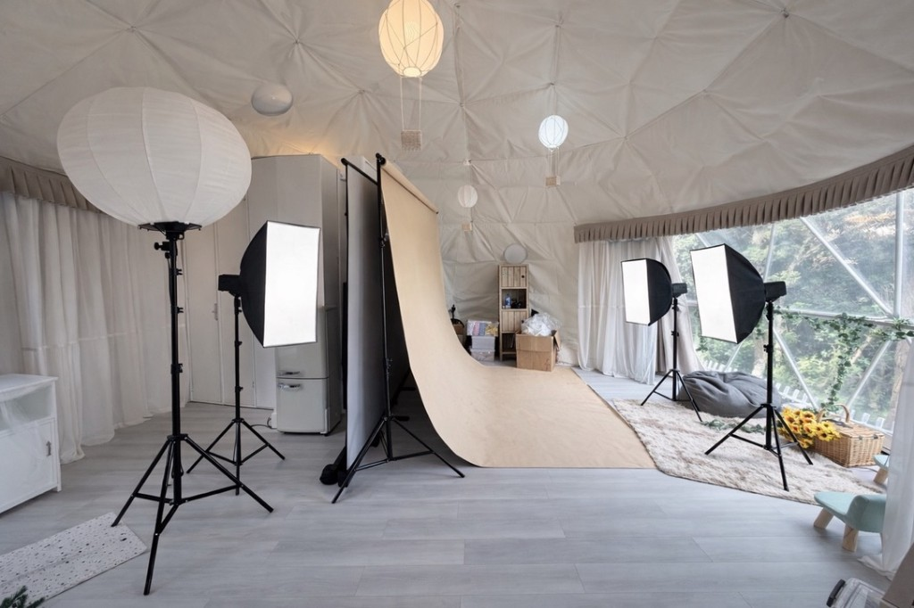
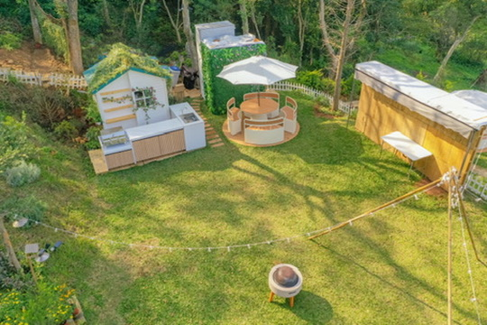
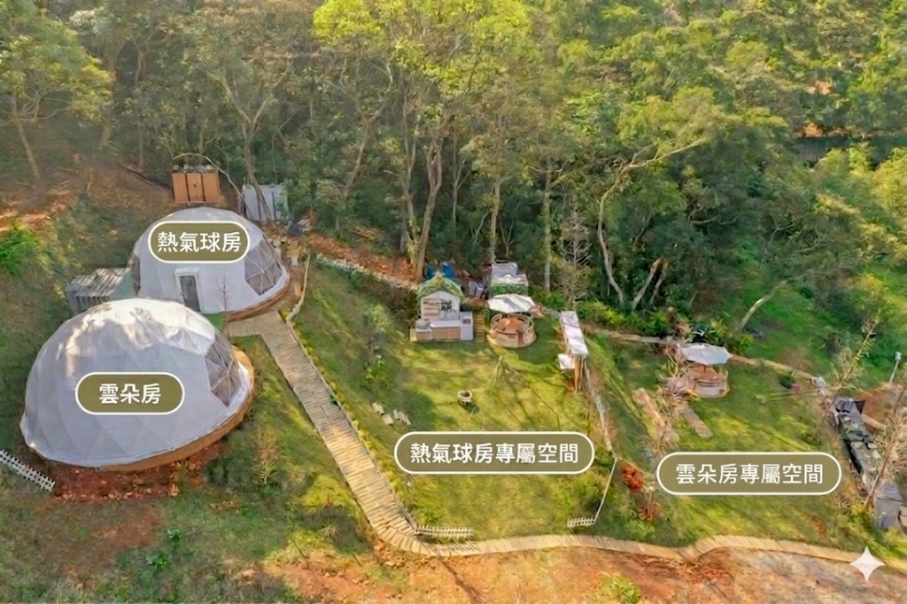
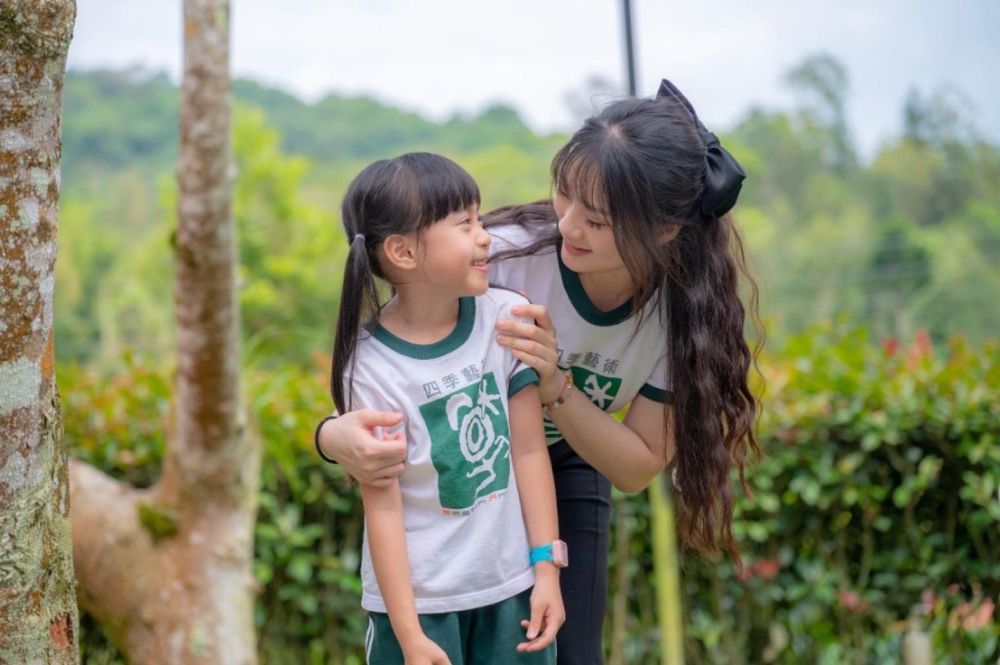
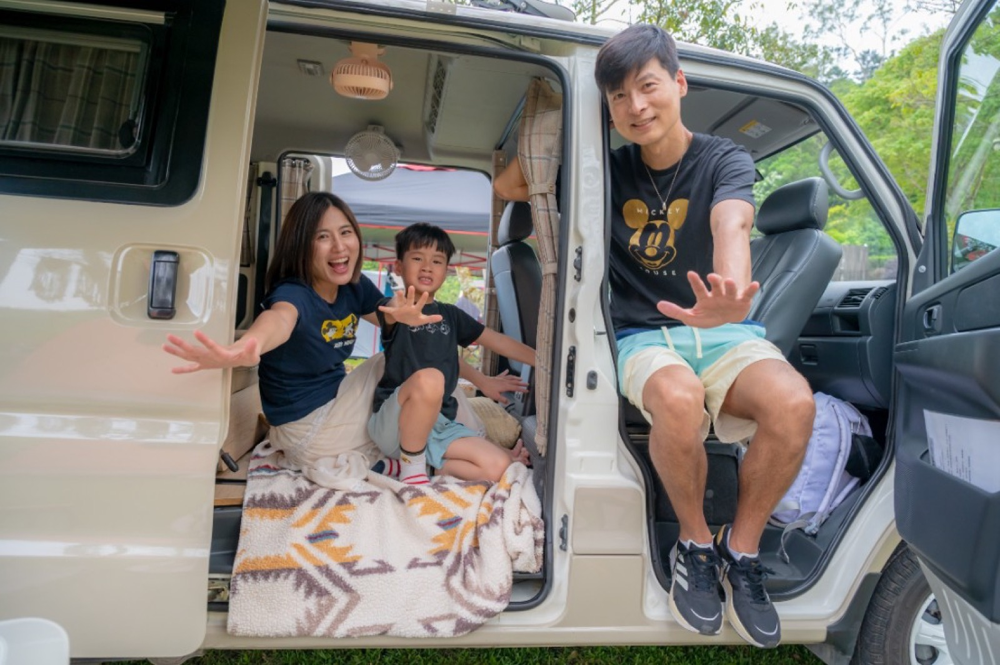
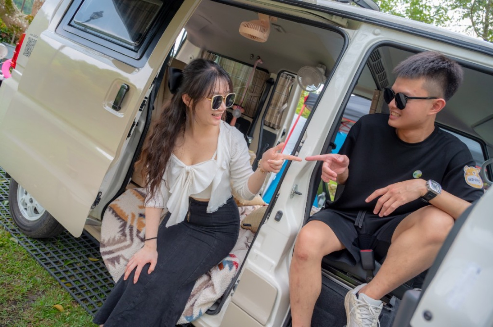
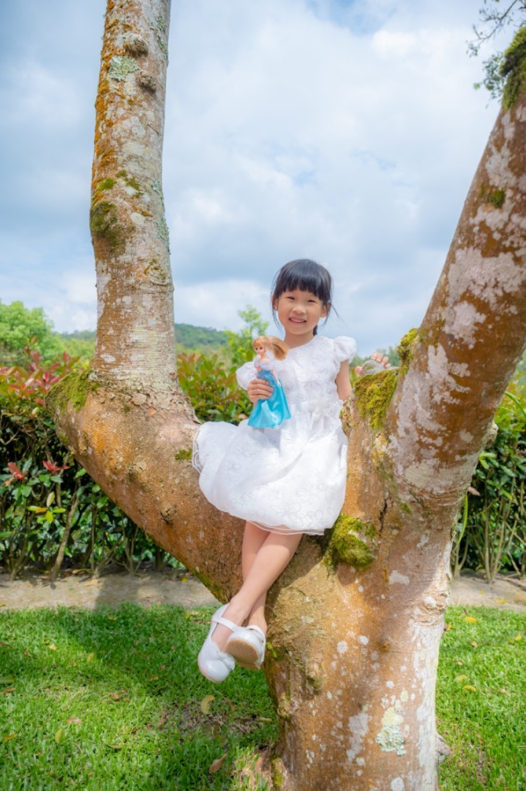

限定合作企劃｜小巴老師 × 揪好森 Joyforest 露營區
最低承接 15 位畢業生 內容依需求另行報價
森林系畢業寫真｜畢業照、家庭照與露營風場景一次完成
這不是只有拍幾張畢業照，而是一場屬於孩子、同學與家人的森林畢業小旅行。小巴老師攝影團隊結合揪好森露營區，準備白背景學士服、草地樹林、圓頂帳篷與露營風小帳篷道具場景，讓畢業照拍得自然、有故事，也能拍完留下來聚餐或過夜。
白背景學士服
提供學士服拍攝，保留正式畢業照儀式感。
森林草地外拍
在草地、樹林與自然光中拍出活潑、有故事的畢業照。
家庭合照
每位畢業生都能安排與家人一起拍攝畢業家庭照。
拍完可聚餐或過夜
可加選露營區停留、火鍋烤肉聚餐，或直接升級住宿一晚。
為什麼把畢業照拍到露營區？
一般畢業照常常在學校或攝影棚完成，但對孩子來說，畢業其實不只是拍一張正式照片，而是一段成長的紀念。這次小巴老師攝影團隊與揪好森 Joyforest 露營區合作，把畢業照變成更完整的小旅行體驗。
在這裡可以先拍白背景學士服，留下正式的畢業紀念；接著走到草地、樹林、圓頂帳篷與露營風小帳篷道具場景，拍同學小組照、自然互動照，也能讓每位畢業生和家人一起留下家庭合照。拍攝結束後，不用馬上離開，可以留下來休息、吃飯、聊天，甚至直接住一晚。
這個方案特別適合：
- 至少 15 位畢業生的學校或班級
- 幼兒園畢業生、小學生畢業生
- 想拍正式學士服，也想拍自然戶外照片的家庭
- 希望統一安排戶外畢業寫真的學校或班級
- 不想只拍攝影棚，希望有草地、帳篷、露營風與自然光場景
揪好森露營區｜合作拍攝場景實景
森林系畢業寫真在揪好森 Joyforest（桃園楊梅森林包場豪華露營）進行：圓頂帳篷內可搭設白背景與燈光，戶外有專屬草地、戶外廚房與森林環景，拍完還能依方案停留聚餐或住宿。
前往揪好森露營區官網（camp.8-ways.com） 前往露營區官網查看場地



拍攝內容包含什麼？
1. 白背景學士服個人照
保留最經典的畢業照形式，適合做紀念、送親友或學校使用。
2. 畢業生個人自然照
在草地、樹林、帳篷旁拍攝自然表情，不只站好拍照，而是透過互動引導留下真實笑容。
3. 小組合照與好友照
依班級與好友分組安排同學照、好友照、奔跑互動照與露營風小組照。
4. 每位畢業生家庭照
每位畢業生都可以安排與家人一起拍攝，讓畢業照不只是孩子的照片，也是全家的紀念。
5. 露營風小帳篷道具場景
使用露營風小帳篷、草地、戶外道具，拍出跟一般畢業照不同的森林感。
6. 圓頂帳篷與草地樹林場景
結合揪好森露營區的圓頂帳篷、草地、戶外廚房與森林背景，讓照片更有旅行感。
實際拍起來會是什麼感覺？
森林系畢業寫真不是只有站好拍照，而是把正式畢業照、孩子自然互動、同學小組照與家庭合照放在同一天完成。
這次的新方案，可以參考小巴老師過去拍攝的「家庭旅遊聯誼 × 露營畢業照」案例。當孩子來到草地、帳篷與自然環境裡，表情會比一般攝影棚更放鬆，也更容易拍到奔跑、玩耍、互動與真實笑容。
我們仍然會保留正式的白背景學士服畢業照，讓孩子有一張端正、經典、可以收藏的畢業紀念；接著再到戶外拍攝草地、樹林、帳篷、小組照與家庭照，讓整組照片同時有正式感與旅行感。
參考作品｜露營畢業照也可以很自然、很活潑
過去小巴老師曾拍攝過結合露營、家庭旅遊與畢業照的作品，孩子在戶外環境中更容易放鬆，照片也不只是一張正式紀念，而是包含同學、老師、家人與當天活動氣氛的完整回憶。這次與揪好森露營區合作，就是希望把這樣的拍攝方式變成更完整、可預約的森林系畢業寫真方案。




照片為小巴老師過去露營畢業照與畢業照拍攝作品參考，實際拍攝內容會依當天人數、天氣、孩子狀態、預約方案與場地安排調整。森林系畢業寫真會保留正式白背景學士服，也會安排戶外草地、帳篷、家庭照與自然互動畫面。
森林系畢業寫真承接方式
最低承接人數：15 位畢業生
未滿 15 位目前不承接，也不提供 1–4 位同價、短停留、按小時或按日計價方案。
請先提供畢業生人數、希望拍攝日期、需要的拍攝內容，以及是否包含畢業紀念冊、家庭照或場地使用。我們會依實際人數與需求確認拍攝規劃及報價。
當天建議流程
短停留方案
- 抵達與換裝｜確認學士服與家庭合照順序
- 白背景學士服拍攝｜個人照、正式畢業照
- 草地與帳篷場景｜小組照、好友照、露營風道具照
- 家庭合照｜每位畢業生安排家庭照
- 簡單休息與收尾｜確認後續交件方式
聚餐休息方案
- 抵達與換裝
- 完成白背景與戶外畢業照拍攝
- 拍攝後使用草地、桌椅與戶外空間
- 可自行準備火鍋、烤肉或簡單餐點
- 在森林裡聊天、休息、讓孩子活動
過夜方案
- 下午抵達後先拍攝畢業寫真
- 傍晚轉為住宿與聚餐時間
- 夜晚可在帳篷與戶外空間休息
- 隔日依房型時間退房
預約前請先了解
Q：最低多少位畢業生可以預約？
最低承接 15 位畢業生；未滿 15 位目前不承接。
Q：會提供學士服嗎？
會提供基本學士服拍攝使用。若需要特定尺寸、顏色或學校指定款式，建議先提前詢問確認。
Q：可以拍家庭照嗎？
可以。此方案的重要特色之一，就是每位畢業生都可以安排家庭合照，讓畢業紀念不只是孩子個人，也包含家人一起陪伴的畫面。
Q：拍完可以烤肉或吃火鍋嗎？
可以選擇聚餐休息方案或過夜方案。場地可使用露營區戶外空間與基本設備，但餐食與食材需自行準備。
Q：有包含畢業紀念冊嗎？
此方案預設不含畢業紀念冊，主要提供調色後照片雲端交付。若需要紀念冊、相本或其他印刷品，可以另外討論報價。
Q：費用怎麼計算？
依至少 15 位畢業生的實際人數、拍攝內容、場地安排，以及是否包含畢業紀念冊或家庭照確認報價，不按小時或按日計價。
Q：地點在哪裡？
拍攝地點為揪好森 Joyforest 露營區，位於桃園楊梅森林系場地。正式地址與交通方式會在完成預約後提供。
想幫孩子安排一場不一樣的畢業照嗎？
如果你正在找的不只是制式畢業照，而是希望孩子、同學與家人都能一起留下回憶，森林系畢業寫真會很適合。歡迎先用 LINE 告訴我們畢業生人數、希望拍攝日期與需要的拍攝內容；最低承接 15 位畢業生，我們會協助確認攝影排程、場地安排與報價。